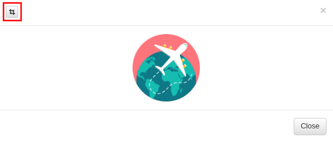
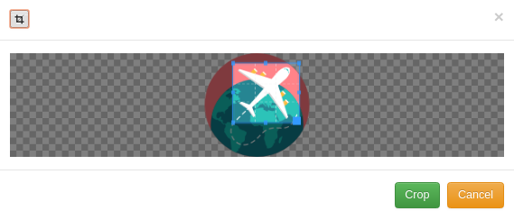

uAdmin Tutorial Part 2 - Internal vs. External Models¶
In this part, we will discuss about the difference between internal and external models, and how to crop images in the model.
Internal Models¶
Internal models are models inside your main.go and don’t have their .go file, they are useful if you want to make something quick but it is advisable to always you external models.
The code below is an example of internal model:
package main
import (
"time"
"github.com/username/todo/models"
"github.com/uadmin/uadmin"
)
// Todo internal model ...
type Todo struct {
uadmin.Model
Name string
Description string `uadmin:"html"`
TargetDate time.Time
Progress int `uadmin:"progress_bar"`
}
func main() {
uadmin.Register(
Todo{}, // register the Todo struct
models.Category{},
)
uadmin.StartServer()
}
External Models¶
External models are models outside of main.go and have their own .go file. Let’s add a category external model, create a file named category.go and add the following code:
package models
import "github.com/uadmin/uadmin"
// Category model ...
type Category struct {
uadmin.Model
Name string `uadmin:"required"`
Icon string `uadmin:"image"`
}
Now register the model on main.go where models is folder name and Category is model/struct name:
func main() {
uadmin.Register(
Todo{},
models.Category{}, // <-- place it here
)
uadmin.StartServer()
}
Run your application. As expected, the category model is added in the uAdmin Dashboard.

Let’s create a new data in the category model.

As you can see, the Name field is required indicated by the * symbol. Required field cannot be an empty string. In the Icon field, you can browse an image file in .png, .jpg, .jpeg, or .gif in your computer.
uAdmin also allows you to crop your images.
 Once you are done, click the Crop button below and refresh the webpage to save your progress.
Congrats, now you know how to create an external model, adding a new data in the model through the server and cropping an image.
In the next part we will talk about linking models using a foreign key.